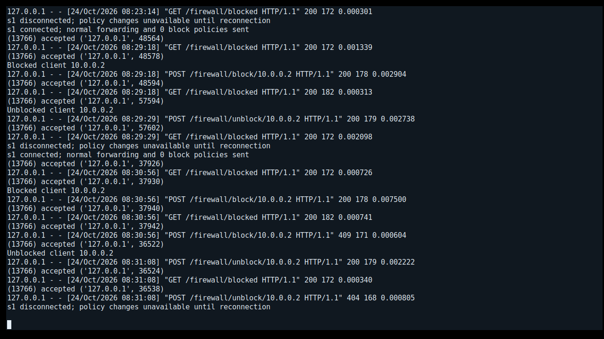
EVIDENCE / 01
Controller running
Ryu loaded the firewall app and handled real switch and API events.
Browse twelve screenshots of actual saved terminal output from the Mininet/OVS run. Each card links to the raw file that was displayed. The machine-readable test report preserves topology, ping loss, rule counts, and timing.
Evidence provenance. The integration runner saved raw output while the network test executed. The PNGs were captured afterward from a virtual terminal displaying those saved files. They are real screenshots of recorded output, not live Mininet windows. The raw files are the primary evidence.
Filter the gallery by phase or expand any screenshot. The raw output link opens the corresponding source file.

Ryu loaded the firewall app and handled real switch and API events.
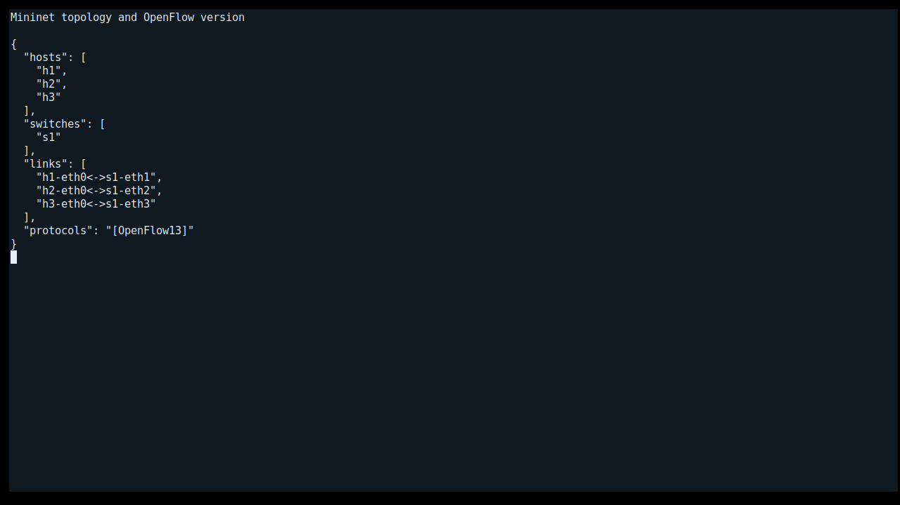
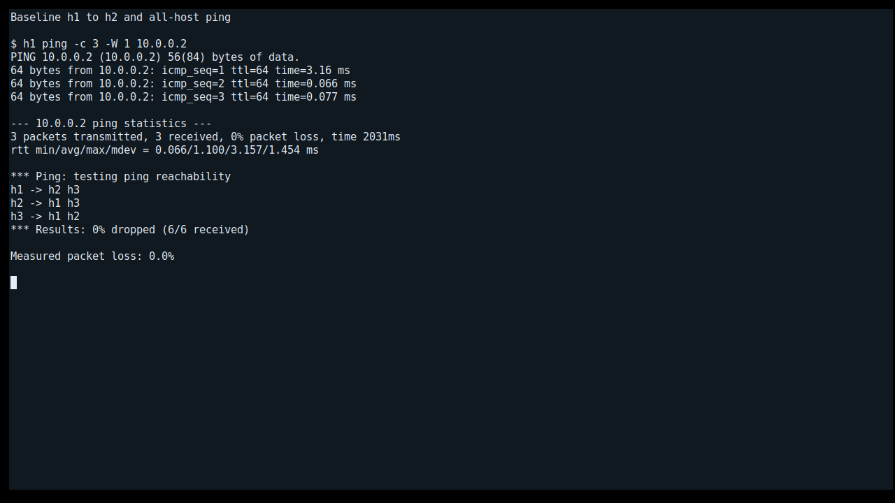
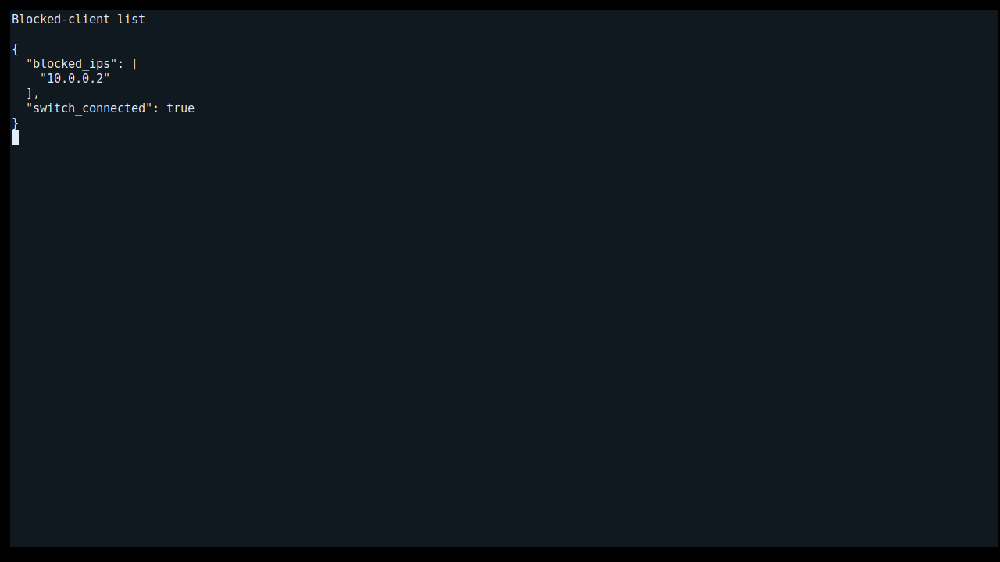
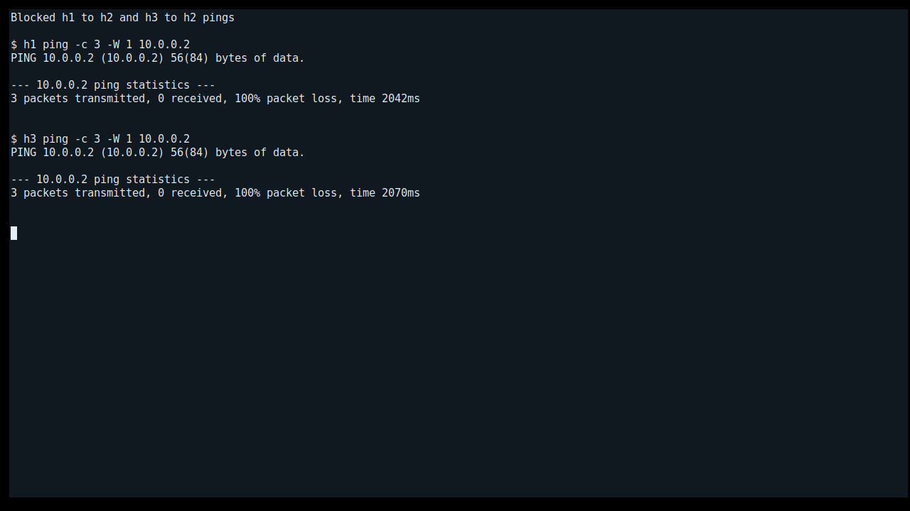
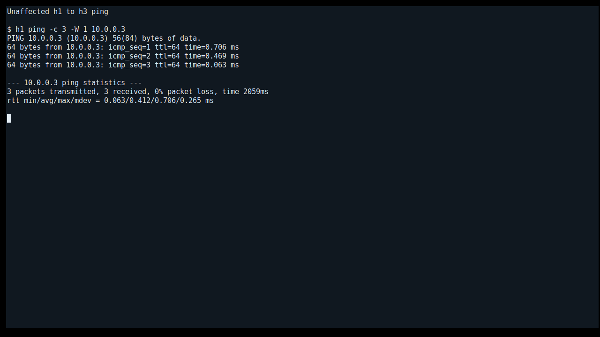
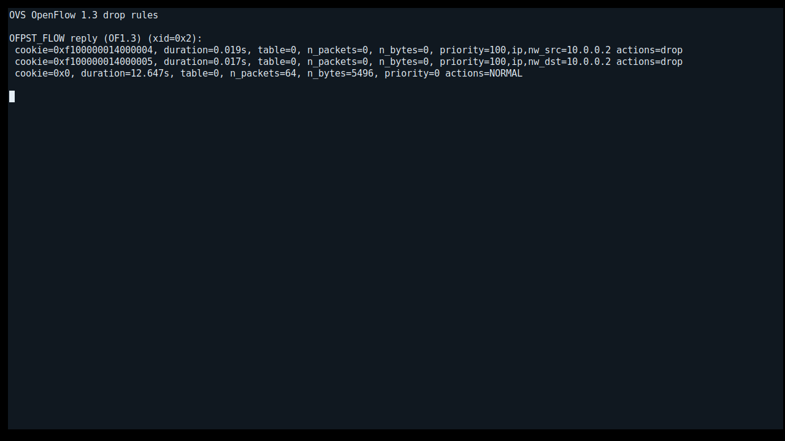
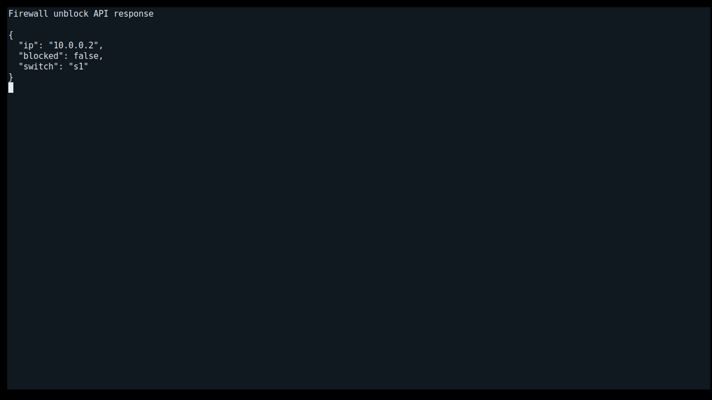
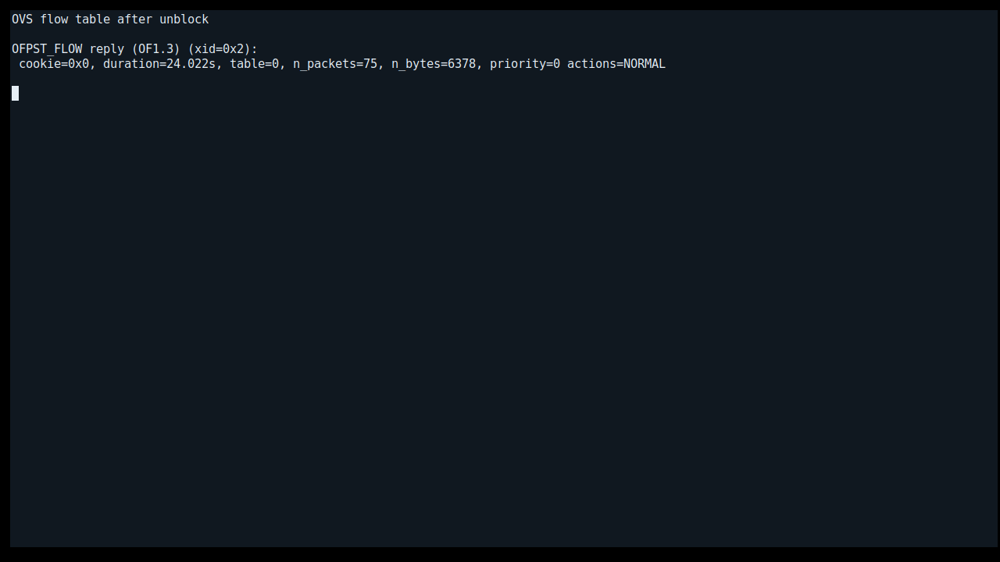
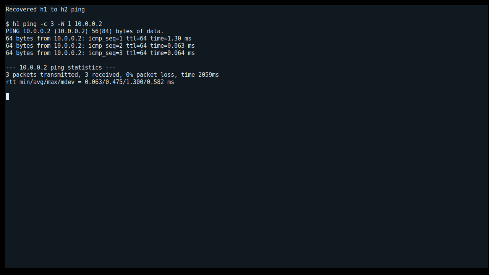
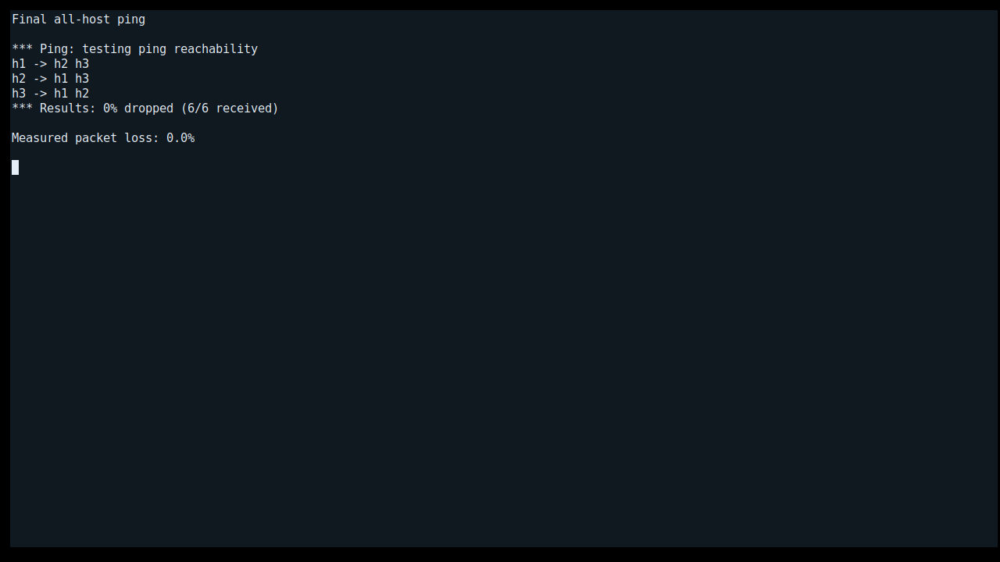
Text and JSON files make the results inspectable, searchable, and reusable without relying on screenshots.
The full result JSON includes all observed directed pings, the topology, duplicate-request checks, rule counts, and measured times.
Primary acceptance record for the full network test.
Six HTTP validation and error-state checks.
Six controller tests passed.
Compare the exact OpenFlow entries across the three phases. The two drop rules appear only while h2 is blocked.
Zero priority-100 drops.
Source and destination matches for 10.0.0.2.
Exact deletion restored the initial table shape.
What the screenshots do not prove by themselves: a static image cannot establish packet filtering. The acceptance result combines API responses, OVS flow dumps, and packet-loss tests. The flow snapshot was taken before blocked pings, so its counters may read zero even though later pings were dropped.